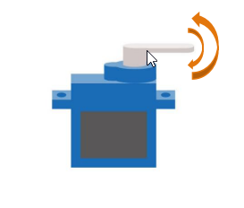
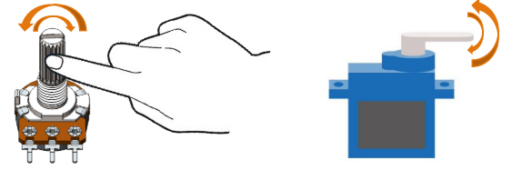

Chapter 16 Servo
Previously, we learned how to control the speed and rotational direction of a mo tor. In this chapter, we will learn about servos which are a rotary actuator ty pe motor that can be controlled to rotate to specific angles.
Project 16.1 Servo Sweep
First, we need to learn how to make a servo rotate.
Component List
ESP32-S3-WROOM x1
GPIO Extension Board x1
830 Tie-Points Breadboard x1
Servo x1
Jumper Wire x5
Connect
Use caution when supplying power to the servo, it should be 5V. Make sure you do not make any errors when connecting the servo to the power supply.

Code
Move the program folder “Super_Starter_Kit_for_ESP32_S3/Python/Python_C odes” to disk(D) in advance with the path of “D:/Micropython_Codes”.
Open “Thonny”, click “This computer” >> “D:” >> “Micropython_Codes” >> “16.1_Servo_S weep”. Select “myservo.py”, right click your mouse to select “Upload to /”, wait for “myservo.py” to be uploaded to ESP32-S3 and then double click “Servo_Sweep.py”.
16.1_Servo_Sweep
Click “Run current script”, the Servo will rotate from 0 degrees to 180 degrees and then reverse the direction to make it rotate from 180 degrees to 0 degrees and repeat these actions in an endless loop.

Code
The following is the program code:
from myservo import myServo
import time
servo=myServo(21)#set servo pin
servo.myServoWriteAngle(0)#Set Servo Angle
time.sleep_ms(1000)
try:
while True:
for i in range(0,180,1):
servo.myServoWriteAngle(i)
time.sleep_ms(15)
for i in range(180,0,-1):
servo.myServoWriteAngle(i)
time.sleep_ms(15)
except:
servo.deinit()
Project 16.2 Servo Knop
Use a potentiometer to control the servo motor to rotate at any angle.
Component List
ESP32-S3-WROOM x1
GPIO Extension Board x1
830 Tie-Points Breadboard x1
Servo x1
Potentiometer(10k) x1
Jumper Wire x6
Connect
Use caution when supplying power to the servo, it should be 5V. Make sure you do not make any errors when connecting the servo to the power supply.

Code
Move the program folder “Super_Starter_Kit_for_ESP32_S3/Python/Python_C odes” to disk(D) in advance with the path of “D:/Micropython_Codes”.
Open “Thonny”, click “This computer” >> “D:” >> “Micropython_Codes” >> “16.2_Servo_K nop”. Select “myservo.py”, right click your mouse to select “Upload to /”, wait for “myservo.py” to be uploaded to ESP32S3 and then double click “Servo_Knop.py”.
16.2_Servo_Knop
Click “Run current script”, twist the potentiometer back and forth, and the servo motor rotates accordingly.
Code
The following is the program code:
from myservo import myServo
from machine import ADC,Pin
import time
servo=myServo(21)
adc2=ADC(Pin(14))
adc2.atten(ADC.ATTN_11DB)
adc2.width(ADC.WIDTH_12BIT)
try:
while True:
adcValue=adc2.read()
angle=(adcValue*180)/4096
servo.myServoWriteAngle(int(angle))
time.sleep_ms(50)
except:
servo.deinit()
In this project, we will use Pin(14) of ESP32-S3 to read the ADC value of the rotary potentiometer and then convert it to the angle value required by the servo and control the servo to rotate to the corresponding angle.